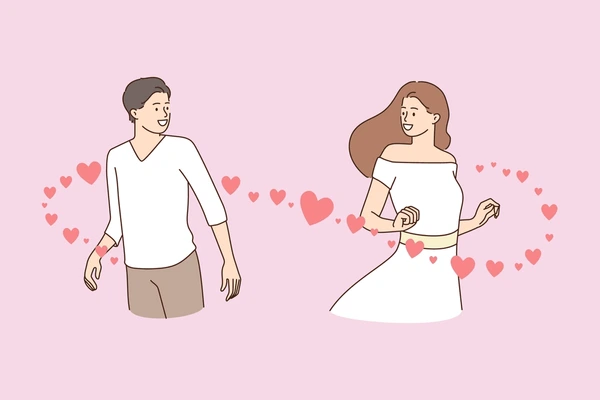
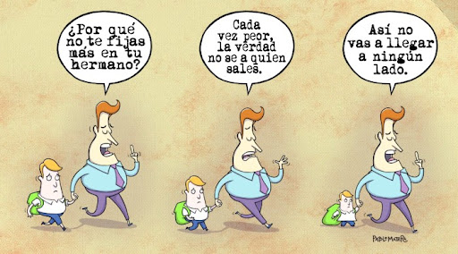
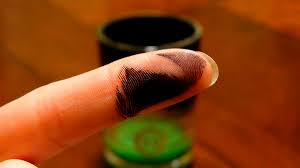

Pagina 3
LETRA H
En esta página encontraremos las palabras más comunes para la letra H.
1. Hedónico: Relacionado con el placer o la búsqueda de este.

2. Hiriente: Que causa ofensa o daño moral.

3. Histriónico: Relacionado con la actuación teatral o con comportamiento exagerado.
4. Hollín: Residuo negro y grasiento producido por la combustión incompleta.

5. Hendiadís: Figura retórica que usa dos palabras coordinadas para expresar una sola idea.